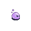
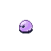

Introdução ao Jogo
Sugarland Adventure é um projeto de jogo. Ele foi nos desafiado pelos nossos professores do ensino Técnico, com a proposta de criarmos um jogo como forma avaliativa para o 4° Bimestre do nosso ano letivo.
A nossa ideia central foi, ser algo intuitivo, educativo e que se chama a atenção, do nosso público-alvo. Por tanto, dês da música até as contas matemáticas, foram pensados em diretamente pensado para um público.
Nós decidimos este formato de jogo, no qual seria de plataforma; além de ser um formato mais fácil, também seria mais intuitivo para um público infanto-juvenil.
História do Jogo
- O jogo tem como ponto a personagem principal conseguir chegar ao destino final, enquanto segue por um caminho perigoso. Ela tem o objetivo de tentar se desviar de obstáculos, como inimigos, buracos na plataforma, e espinhos que se cair ou encostar, aparecerá uma conta de matemática que se acertada, ela continua seu caminho, ao contrário perde o jogo e volta para o início de onde veio.
- Ao chegar no destino final a personagem principal ganha uma bandeira vermelha em sinal de vitória ao concluir o jogo, e assim finaliza a primeira fase e passa para a próxima ainda mais desafiadora, com inimigos mais fortes, obstáculos mais difíceis e contas de matemática mais complexas.
Objetivo do Jogo
- O Sugarland Adventure tem como objetivo preparar o usuário, e reforçar a mente dele para o futuro. As contas carregam esta missão, a matéria que escolhemos acompanha a faixa etária que demos como o objetivo do nosso jogo.
sprites
-  .
Código do Jogo
- Aqui no link para GitHub podemos visualizar o código.